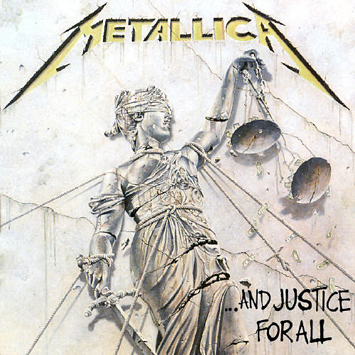
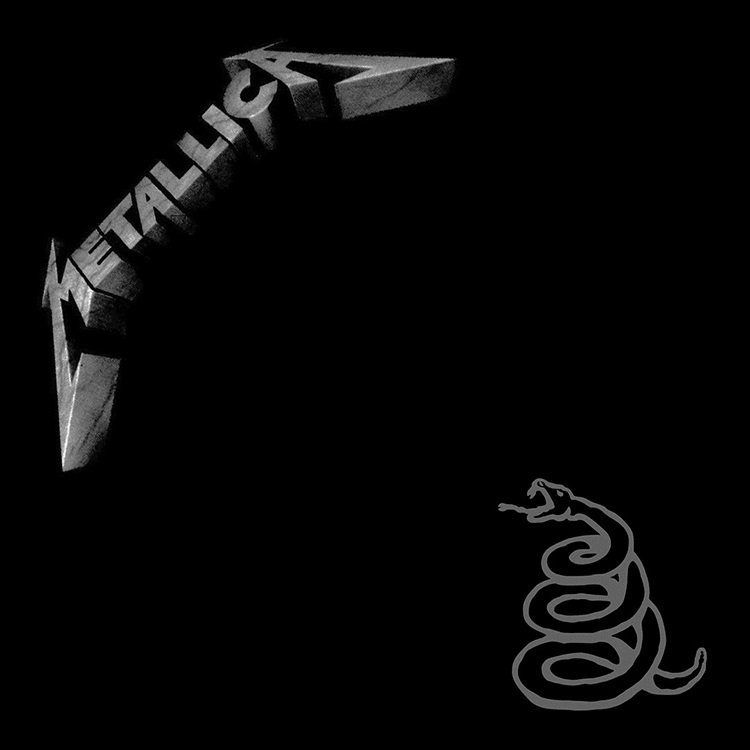
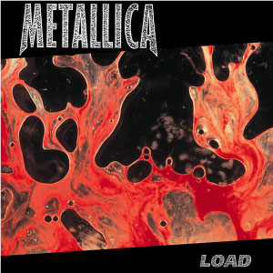
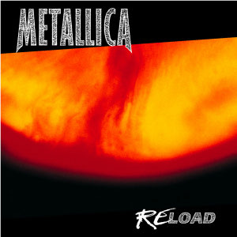

Kill 'Em All — первый дебютный студийный альбом, выпущенный 25 июля 1983 года.

Ride the Lightning — второй студийный альбом, вышедший 27 июля 1984 года.

Master of Puppets — третий студийный альбом, выпущенный 3 марта 1986.

…And Justice for All — четвёртый студийный альбом, выпущенный 7 сентября 1988

The Black Album — пятый студийный альбом, выпущенный 12 августа 1991 года.

Load — шестой студийный альбом, выход которого состоялся в июне 1996 года.

ReLoad — седьмой студийный альбом, вышедший в 1997 году.

St. Anger — восьмой студийный альбом, выпущенный 5 июня 2003 года.
Death Magnetic — девятый студийный альбом, вышедший 12 сентября 2008 года
Hardwired… To Self-Destruct — десятый студийный альбом, выпущенный 18 ноября 2016 года.
72 Seasons — одиннадцатый студийный альбом, выпущенный 14 апреля 2023 года.